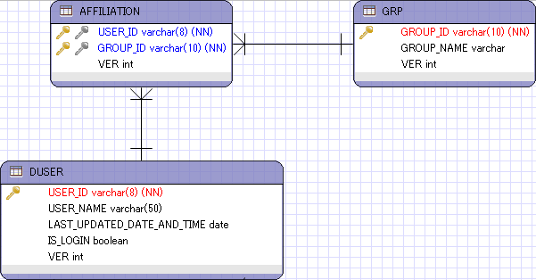

多対多の関係テーブルにおけるデータ削除¶
実装方針¶
ユーザとグループなど、モデル間の関連実体として、「所属」という関係性を挟んで、多対多の関連を持つデータが存在する。 こうしたエンティティは、Javaオブジェクト上ではお互いをリストで保持するような形で相互のオブジェクト参照を保持するが、 リレーショナルデータベース上では、相互の関連を多対1、1対多の構成となるように所属テーブルを作成することが一般的である。
こうしたテーブルに対して、データ削除を実施する場合は、削除対象となるデータの検索条件が色々なテーブルに跨るケースが多くなる。 例えば、上記で特定のグループに属するユーザを削除したいといった場合には以下の通り、「多対多の関係テーブルにおけるデータ取得」にて 説明した要領で削除対象のデータを取得し、CriteriaAPIを使って削除する方法が簡易である。 CriteriaAPIを用いれば、エンティティクラスで指定したアノテーションのcascade属性に応じて、関連テーブルのデータに対してもDELETEが行われる。
ただし、データ件数が複数件になる場合は、データが1件に対し、SQLが発行されることになるので、件数が大量になる場合はJPQLによる一括更新を検討すること。 また、JPQLやNativeSQLでデータ削除を行う際は、関連するデータもcascadeの属性と整合性が取れるように、削除する必要がある。 また、各エンティティにおける排他制御やトランザクションのロールバック方針については別途検討を行うこと。
例) 特定グループに属するユーザを削除する場合
test-javaee6-ejb jp.co.nttdata.rd.test.domain.service.impl.ejb.dbaccess.ManyToManyDeleteServiceImpl
1 2 3 4 5 6 7 8 9 10 11 12 13 14 15 16 17 18 19 20 21 22 23 24 25 26 27 28 29 30 31 32 33 34 35 36 37 38 | package jp.co.nttdata.rd.test.domain.service.impl.ejb.dbaccess;
import java.util.List;
import javax.ejb.EJB;
import javax.ejb.Stateless;
import jp.co.nttdata.rd.test.common.exception.BusinessException;
import jp.co.nttdata.rd.test.domain.model.Group;
import jp.co.nttdata.rd.test.domain.model.User;
import jp.co.nttdata.rd.test.domain.repository.UserRepository;
import jp.co.nttdata.rd.test.domain.repository.GroupRepository;
import jp.co.nttdata.rd.test.domain.service.dbaccess.ManyToManyDeleteService;
@Stateless
public class ManyToManyDeleteServiceImpl implements ManyToManyDeleteService{
@EJB
GroupRepository groupRepository;
@EJB
UserRepository userRepository;
@Override
public List<User> deleteUsers(Group group) throws BusinessException {
List<User> deleteUsers = getUsers(group);
for(User user : deleteUsers){
userRepository.remove(user);
}
return deleteUsers;
}
@Override
public List<User> getUsers(Group group) {
return userRepository.findByGroupId(group.getGroupId());
}
}
|
更新対象となるデータは、「多対多関連におけるデータ取得」のやり方と同様の方法で取得する。
test-javaee6-domain jp.co.nttdata.rd.test.domain.repository.impl.jpa.UserRepositoryImpl
1 2 3 4 5 6 7 8 9 10 11 12 13 14 15 16 17 18 19 20 21 22 23 24 25 26 27 28 29 30 31 32 33 34 35 36 37 38 39 40 | package jp.co.nttdata.rd.test.domain.repository.impl.jpa;
import java.util.List;
import javax.ejb.Stateless;
import javax.ejb.TransactionAttribute;
import javax.ejb.TransactionAttributeType;
import javax.persistence.Query;
import javax.persistence.criteria.CriteriaBuilder;
import javax.persistence.criteria.CriteriaQuery;
import javax.persistence.criteria.Join;
import javax.persistence.criteria.Predicate;
import javax.persistence.criteria.Root;
import jp.co.nttdata.rd.test.domain.model.Affiliation;
import jp.co.nttdata.rd.test.domain.model.Affiliation_;
import jp.co.nttdata.rd.test.domain.model.User;
import jp.co.nttdata.rd.test.domain.model.Group;
import jp.co.nttdata.rd.test.domain.model.User_;
import jp.co.nttdata.rd.test.domain.repository.UserRepository;
@Stateless
@TransactionAttribute(TransactionAttributeType.REQUIRED)
public class UserRepositoryImpl extends GenericDaoImpl<User, String> implements UserRepository{
@Override
public List<User> findByGroupId(String groupId) {
CriteriaBuilder criteriaBuilder = entityManager.getCriteriaBuilder();
CriteriaQuery<User> query = criteriaBuilder.createQuery(User.class);
Root<User> root = query.from(User.class);
Join<User, Affiliation> joinAffiliation = root.join(User_.affiliations);
Join<Affiliation, Group> joinGroup = joinAffiliation.join(Affiliation_.grp);
Predicate predicate = criteriaBuilder.equal(joinGroup.get("groupId"), groupId);
query.select(root);
query.where(predicate);
return entityManager.createQuery(query).getResultList();
}
// omit
}
|
remove()メソッドの実行により、エンティティクラスにcascade属性で、cascadeType.REMOVEもしくはALLがついているものも合わせて削除される。
test-domain jp.co.nttdata.rd.test.domain.model;
1 2 3 4 5 6 7 8 9 10 11 12 13 14 15 16 17 18 19 20 21 22 23 24 25 26 27 28 29 30 31 32 33 34 35 36 37 38 39 40 41 42 43 44 45 46 47 48 49 50 51 52 53 | package jp.co.nttdata.rd.test.domain.model;
import java.io.Serializable;
import javax.persistence.*;
import java.util.Date;
import java.util.List;
import lombok.AllArgsConstructor;
import lombok.Builder;
@AllArgsConstructor
@Builder
@Entity
@Table(name="duser")
@NamedQuery(name="User.findAll", query="SELECT u FROM User u")
public class User implements Serializable {
private static final long serialVersionUID = 1L;
@Id
@Column(name="user_id")
private String userId;
@Column(name="is_login")
private Boolean isLogin;
@Temporal(TemporalType.DATE)
@Column(name="last_updated_date_and_time")
private Date lastUpdatedDateAndTime;
@Column(name="user_name")
private String userName;
@Version
private Integer ver;
@OneToMany(mappedBy="duser", cascade = CascadeType.ALL)
private List<Address> addresses;
@OneToMany(mappedBy="duser", cascade = CascadeType.ALL)
private List<Affiliation> affiliations;
@OneToMany(mappedBy="duser", cascade = CascadeType.ALL)
private List<Credential> credentials;
@OneToMany(mappedBy="duser", cascade = CascadeType.ALL)
private List<Email> emails;
@OneToMany(mappedBy="duser", cascade = CascadeType.ALL)
private List<Phone> phones;
// omit
}
|
上記の例では、取得したデータ件数(ユーザ数)分ループを回してプロパティを変更しているので、SQLはユーザ数×関連テーブルも含めたデータ件数分発行される。
1 2 3 4 5 6 7 | /* ユーザ1人あたりで、発行されるSQL */
delete from Address where address_no=? and user_id=?
delete from Affiliation where group_id=? and user_id=? and ver=?
delete from Credential where credential_id=? and user_id=?
delete from Email where email_no=? and user_id=?
delete from Phone where phone_no=? and user_id=?
delete from duser where user_id=? and ver=?
|
副問合せを用いた一括削除¶
データ件数が多く、パフォーマンスに支障が出る場合は、副問合せで対象データを取得して、JPQLなどで一括更新するとよい。 ただし、手動でデータ削除する際は以下の点に注意する。
- 関連テーブルの削除対象をエンティティクラスのcascade属性と整合性がとれるように決定しておくこと。※当サンプルの例では、Userの他にAddress、Affiliation、Credential、Email、Phoneを合わせて削除する。削除対象に漏れがある場合、新たにユーザ追加するとバグを誘発する可能性があるので注意すること。
- JPQLでは楽観ロックによるチェックを独自に組み込む必要があること。※この場合はデータ削除されるので考慮不要かもしれない。
- デッドロック防止のため、全てのテーブルの更新順を規定したとおりに実装しておくこと。
test-javaee6-ejb jp.co.nttdata.rd.test.domain.service.impl.ejb.dbaccess.ManyToManyDeleteServiceImpl
1 2 3 4 5 6 7 8 9 10 11 12 13 14 15 16 17 18 19 20 21 22 23 24 25 26 27 28 29 | import java.util.List;
import javax.ejb.EJB;
import javax.ejb.Stateless;
import jp.co.nttdata.rd.test.common.exception.BusinessException;
import jp.co.nttdata.rd.test.domain.model.Group;
import jp.co.nttdata.rd.test.domain.model.User;
import jp.co.nttdata.rd.test.domain.repository.UserRepository;
import jp.co.nttdata.rd.test.domain.repository.GroupRepository;
import jp.co.nttdata.rd.test.domain.service.dbaccess.ManyToManyDeleteService;
@Stateless
public class ManyToManyDeleteServiceImpl implements ManyToManyDeleteService{
@EJB
GroupRepository groupRepository;
@EJB
UserRepository userRepository;
@Override
public List<User> deleteUsers(Group group) throws BusinessException {
List<User> deleteUsers = getUsers(group);
if(!userRepository.deleteByGroup(group)){
throw new BusinessException("E0007");
}
return deleteUsers;
}
|
test-javaee6-domain jp.co.nttdata.rd.test.domain.repository.impl.jpa.UserRepositoryImpl
1 2 3 4 5 6 7 8 9 10 11 12 13 14 15 16 17 18 19 20 21 22 23 24 25 26 27 28 29 30 31 32 33 34 35 36 37 38 39 40 41 42 43 44 45 46 47 48 49 50 51 52 53 54 55 56 57 58 59 60 61 62 63 64 65 66 67 68 69 70 71 72 73 74 75 76 77 78 79 80 81 82 83 84 85 86 87 88 89 | package jp.co.nttdata.rd.test.domain.repository.impl.jpa;
import java.util.List;
import javax.ejb.Stateless;
import javax.ejb.TransactionAttribute;
import javax.ejb.TransactionAttributeType;
import javax.persistence.Query;
import jp.co.nttdata.rd.test.domain.model.User;
import jp.co.nttdata.rd.test.domain.model.Group;
import jp.co.nttdata.rd.test.domain.repository.UserRepository;
@Stateless
@TransactionAttribute(TransactionAttributeType.REQUIRED)
public class UserRepositoryImpl extends GenericDaoImpl<User, String> implements UserRepository{
// JPQLを使用して、副問合せした結果を元に一括削除を行うパターン。
// JPA2.0はCriteriaDeleteがサポートされないので、CriteriaAPIでDELETE文は作れない。
// JPQLもしくはNativeSQLでDELETE文を作成するしかない。
@Override
public boolean deleteByGroup(Group group) {
// Constraint制約にならないよう、関連テーブルからデータ削除していく。
// デッドロックにならないよう、テーブル更新順序は製造規約で定めた順序に従って更新する。
// 可読性のために+で連結しているが、SQLを組み立てる際はStringBuilderを利用すること。
Query addressDeleteQuery = entityManager.createQuery(
"DELETE FROM Address a "
+ "WHERE a.id.userId in ( "
+ "SELECT u.userId FROM User u "
+ "JOIN u.affiliations a "
+ "JOIN a.grp g "
+ "WHERE g.groupId = :groupId )");
addressDeleteQuery.setParameter("groupId", group.getGroupId());
addressDeleteQuery.executeUpdate();
Query affiliationDeleteQuery = entityManager.createQuery(
"DELETE FROM Affiliation a "
+ "WHERE a.id.userId in ( "
+ "SELECT u.userId FROM User u "
+ "JOIN u.affiliations a "
+ "JOIN a.grp g "
+ "WHERE g.groupId = :groupId )");
affiliationDeleteQuery.setParameter("groupId", group.getGroupId());
affiliationDeleteQuery.executeUpdate();
Query credentialDeleteQuery = entityManager.createQuery(
"DELETE FROM Credential c "
+ "WHERE c.id.userId in ( "
+ "SELECT u.userId FROM User u "
+ "JOIN u.affiliations a "
+ "JOIN a.grp g "
+ "WHERE g.groupId = :groupId )");
credentialDeleteQuery.setParameter("groupId", group.getGroupId());
credentialDeleteQuery.executeUpdate();
Query emailDeleteQuery = entityManager.createQuery(
"DELETE FROM Email e "
+ "WHERE e.id.userId in ( "
+ "SELECT u.userId FROM User u "
+ "JOIN u.affiliations a "
+ "JOIN a.grp g "
+ "WHERE g.groupId = :groupId )");
emailDeleteQuery.setParameter("groupId", group.getGroupId());
emailDeleteQuery.executeUpdate();
Query phoneDeleteQuery = entityManager.createQuery(
"DELETE FROM Phone p "
+ "WHERE p.id.userId in ( "
+ "SELECT u.userId FROM User u "
+ "JOIN u.affiliations a "
+ "JOIN a.grp g "
+ "WHERE g.groupId = :groupId )");
phoneDeleteQuery.setParameter("groupId", group.getGroupId());
phoneDeleteQuery.executeUpdate();
Query userDeleteQuery = entityManager.createQuery(
"DELETE FROM User u "
+ "WHERE u.userId in ( "
+ "SELECT u.userId FROM User u "
+ "JOIN u.affiliations a "
+ "JOIN a.grp g "
+ "WHERE g.groupId = :groupId )");
userDeleteQuery.setParameter("groupId", group.getGroupId());
userDeleteQuery.executeUpdate();
return true;
}
// omit
}
|
上記の例では、SQLは各テーブルにつき、1回だけ発行される。
1 2 3 4 5 6 7 8 9 10 11 12 13 14 15 16 17 18 19 20 21 22 23 24 25 26 27 28 29 30 31 32 33 34 35 36 37 38 39 40 41 42 43 44 45 46 47 48 49 50 51 52 53 54 | delete from Address
where user_id in (
select user1_.user_id from duser user1_
inner join Affiliation affiliatio2_
on user1_.user_id=affiliatio2_.user_id
inner join grp group3_
on affiliatio2_.group_id=group3_.group_id
where group3_.group_id=?
)
delete from Affiliation
where user_id in (
select user1_.user_id from duser user1_
inner join Affiliation affiliatio2_
on user1_.user_id=affiliatio2_.user_id
inner join grp group3_
on affiliatio2_.group_id=group3_.group_id
where group3_.group_id=?
)
delete from Credential
where user_id in (
select user1_.user_id from duser user1_
inner join Affiliation affiliatio2_
on user1_.user_id=affiliatio2_.user_id
inner join grp group3_
on affiliatio2_.group_id=group3_.group_id
where group3_.group_id=?)
delete from Email
where user_id in (
select user1_.user_id from duser user1_
inner join Affiliation affiliatio2_
on user1_.user_id=affiliatio2_.user_id
inner join grp group3_
on affiliatio2_.group_id=group3_.group_id
where group3_.group_id=?)
delete from Phone
where user_id in (
select user1_.user_id from duser user1_
inner join Affiliation affiliatio2_
on user1_.user_id=affiliatio2_.user_id
inner join grp group3_
on affiliatio2_.group_id=group3_.group_id where group3_.group_id=?)
delete from duser
where user_id in (
select user1_.user_id from duser user1_
inner join Affiliation affiliatio2_
on user1_.user_id=affiliatio2_.user_id
inner join grp group3_
on affiliatio2_.group_id=group3_.group_id
where group3_.group_id=?)
|
TODO : 多対多関連におけるデータ削除のパターン整理や排他制御に関する考慮、パフォーマンスを踏まえた検討が必要。